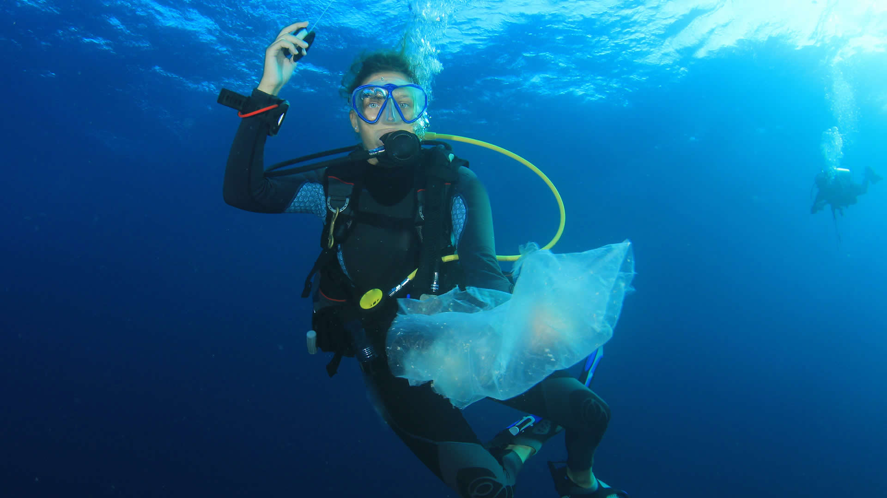

What is Marine Conservation?
Marine ecosystems are aquatic environments with high levels of dissolved salt. Conservation is the act of protecing something. Marine conservation is the protection of marine species and ecosystems in oceans and seas worldwide. It involves not only the protection and restoration of species, populations, and habitats but also mitigating human activities such as overfishing, habitat destruction, pollution, whaling and other issues that impact marine life and habitats.
